(2008-01-23 16:18:38)
市场中，最大的敌人之一，就赌徒心理、赌徒思维。赌，最终的结局就只有一个，如果你以赌徒心理参与市场，那么你的结局就已经注定，你就算还没再锅里，那也只是养肥了再煮而已，没什么区别。
赌徒心理无处不在，除了上一课说的不断加码，还有一些，甚至自己都没注意到。【韶山映山红】赌徒心理１：不断加码。】
例如，有人亏钱了，然后就想，等反弹到多少多少一定出来，以后不玩了。这看起来很不赌徒，但其实也是赌徒心理。
赌徒心理一个最大的特点，就是预设一个虚拟的目标，一个想象中的目标，完全无视市场本身。【韶山映山红】赌徒心理２：预设一个虚拟的目标。】
还有一个特点，就是怕失去机会，怕失去了赚大钱的机会。例如，万一走错了，怎么办？万一还涨，不就亏了？诸如此类。【韶山映山红】赌徒心理３：怕失去赚大钱的机会。】
注意，市场中生存，从来就不是靠一次暴富得到的，一次暴富最后倾家荡产的，本ID见多了。
市场真正的成功，都是严格的操作下完成的。操作失误了有什么大不了的，市场的机会不断涌现，一个严格的操作程序，足以保证你长期的成功。
赌徒心理，一个很经常的行为，就是砍了又追，追了又砍，完全被一股无明的业力牵引，就往那鬼窟里去了。这所谓的杀红了眼，所以就被杀了。【韶山映山红】赌徒心理４：砍了又追，追了又砍。】
赌徒心理，一个更经常的行为，就是不敢操作，看到机会到来，就是怕，等机会真正起来了，又后悔，然后就追上去，5元不敢买的，过段时间50元都敢买，结果又被杀了。【韶山映山红】赌徒心理５：低位不敢操作，高位追涨。】
赌徒心理，还有一种就太常见了，就是听消息，找捷径，以为这世界上就有一个馅饼一定能拍着自己，可能吗？就算能吃到点馅饼，那玩意能当长期饭票吗？【韶山映山红】赌徒心理６：听消息，找捷径。】
赌徒心理，还有一种大概是最常见的，就是我要赚钱买房子、车子。我投入，要把装修的钱赚回来。可悲呀，你以为市场是慈善场所？那是杀人的地方！【韶山映山红】赌徒心理７：设置赚钱目标。】
生活，很简单，一天三顿，五谷为养、五果为助、五畜为益、五菜为充，而不是那些古灵精怪的玩意；市场很简单，就如同生活，在一定的韵律中生长出利润。只有那韵律，那平凡但又能长久的赢利模式，才能使得你战胜市场。
你不需要如赌徒一样整天烦躁不安，又期盼又恐惧，折腾不休。你只要平静地按照自己的韵律、按照市场的显现去与日俱增地强大自己。错过了，就错过了，后面有无数的机会等着。
你，不需要把自己设计为超人。超人是不需要设计的，超人是干出来的。你能长期地战胜市场，你就是市场的超人。因为市场的原则就是，只有最少数的人才能长期地战胜市场，你不是超人，谁还是？
【韶山映山红】
总感觉行情好的时候自己没别人赚的多，这是病，一次次让你掉大坑的病
管住手，知进退，赚进来的钱不要轻易洒出去，这就是本事
赚了亏，亏了赚，过干瘾的聪明人多得是
稳坐钓鱼台，不好？
一个菜鸟交易员花五年时间学习最后能够打平都已经算上道了
大把的人炒多少年账还没有平，一般人来股市就是玩个过瘾
什么半年一年收益图不用发给老湿看，没什么意义
我只希望老湿的铁粉们年年都能保平争胜，这就很牛很牛了
不切实际的预期是迈向失败的第一步，你根本不知道面对的是什么……谈什么战胜？就是个笑话
觉得老湿这一套是忽悠，你尽可以自己去折腾，人嘛，都是信自己，可以理解。
不过，很有把握的是，什么时候你真懂了老湿每天在说些什么，应该是学费交的差不多了
】
【韶山映山红】
有一个思路是有些经历以后才转变过来的。
比如以前有个说法，讲“三重境”。见山是山，见水是水；见山不是山，见水不是水；见山又是山；见水又是水。
道理挺玄乎，几个人真能理论落地？
来看关于胜率的思考。
谁会愿意输呢？当然是希望每次交易都能挣钱，对吧？所以，人之常情，大噶很自然就会追求较高的胜率。穷尽各种方法，力求高胜率。
这是心理成长的必然阶段。也就是见山是山，见水是水。
那么交易次数积累到一定程度，你会发现保持高胜率是很扯淡的事。扯淡在赢得次数多和最终能不能挣到钱，根本不是一回事。
为了保持胜率，你会付出代价。代价是真实的，高胜率必然对应着低赔率。挣钱越来越慢，难在你根本没有几次出手，越想出手必中越难控制亏损，反而拖累了胜率。
这就是见山不是山，见水不是水。
想明白破解之法，是来自跨界。企业管理里有个理论
小公司老板输不起，每一次决策都是生死战，一两个项目没做好，公司就可能垮掉。所以事必躬亲，马虎不得，力求每一笔单子都要做好做完美。
大公司老板困扰得是方向要对，一旦在某个错误方向投入大多资源，转身就很难。不过，大老板每天要决策很多事，他没有时间去每样跟踪调研，所以难免错漏。十件事，能做对两三件就好，四五件不对不错，剩下的错就错了，无所谓的。
公司越大，项目越多，试错越多，重要的不是错了多少次，而是有没有找到正确方向。
输得起，是本钱。找方向，是重点。看山又是山，看水又是水。
经营公司和做交易是一回事，都是生意。
】
你，当然会不时面对不同的危机，危机不能躲，用最快最明确最直面的手段解决，只要还有翅膀，天空就是你的。
前面说，你要用0成本投入。当然，实际上也没必要这样严格。你可以把你完全不影响生活的钱拿出来，告诉自己，这就是你唯一的资本，你没有后援，然后就用这创造你自己的神话。
当然，如果你输光了，你可以再给自己一次机会，但在给自己这次机会之前，你必须把自己彻底解剖一次，把你所有失败的根源都挖出来，然后你告诉自己，这是你最后的尝试。
如果你又输光了，那么，你就退出吧，不是每一个人都适合市场的，不是每一个人都要去当市场的高峰的，我们有时候必须面对的最客观的事实就是：我不行。
然后给自己N年的机会，去学习、去历练，在N年以后，你觉得你有足够的信心重新回到市场了，你再给自己一次机会，如果这还不行，那这一生，你就和市场永远再见。买基金，买国债，什么都可以，但还是别亲自到市场来了。
市场，只是生活的一部分，如此而已。
【韶山映山红】
老湿你是不是那只幸运的大猩猩？（幸存者偏差）
很难说“不是”。明白“幸存者偏差”这个道理，并不是让你去反驳，而是多一点对市场的敬畏。
本质上，运气和能力很难分得太清楚。所以，老湿经常说“我连自己都不信”，这是最后的底线。
不能因为过去的成绩就坚定认为自己赢在能力而不是因为运气。这是自知的一部分。
知道“幸存者偏差”的存在，让我更注意“拒绝赌运气”，也就是依靠一致性来做交易，而不是“不可复制的赌博”。
可以接受失败，只要“错不远”。把精力放在如何争取“不败”，而不是“赢的极致”。
“赢的极致”客观上依赖好运气，而“不败”才更多是能力的体现。
控制能控制的，这才有努力的意义。
所以，“赢看天，输看自己”，就是我悟出来的生存之道。幸存者偏差下不失理智的生存之道。
我不关心别人是不是幸存者偏差的产物，这关我屁事。我只希望自己是“幸存者”，哪怕运气一般。
】
【韶山映山红】
角度不同，结论不同。
今年开年到现在，沪深300差不多涨了24p，年初至今计净值涨了15p，差不多落后了9p
不过……
如果按照初始本金为1来算，年初至今净值涨了40p
敢问有几位童鞋的净值到了1.4？
如果把18年算上，沪深300去年跌了25p，今年涨了24p，净值去年挣了15p，目前又挣了15p。就绝对值来算，沪深300跌了7p，净值涨了31p，还领先38p
沪深300 17年涨了22p ；16年跌了11p；15年涨了5p；
我的净值 17年挣了44p ；16年挣了28p ；15年挣了176p；
炒股票讷，数学不能差，能不能跑赢大盘？不是看日，也不是看月。
当然啦，老湿这点成绩，一年整的还不够人家“股神”一个月赚的。
不过，一年就是一年，两年就是两年，年年都能“慢悠悠”，这也是道行。更重要的是，净值回撤一直很有谱，单月回撤不超过10p，极限回撤不超过20p
老湿这样的风格就算去做私募，是进不了每年排行榜的水平
可是，钱在谁口袋里躺着睡大觉谁心里知道，对不？
所以，挣钱就是挣钱，不在于风生水起，赚多当然更好，但前提是每天能安心能睡好觉。动不动一个月亏个20p，还不把人吓死
“慢就是快”，老湿一点都没跟你讲故事，也希望老湿的粉丝都能走上这条路。快速发财致富的方法，老湿教不了，我不会
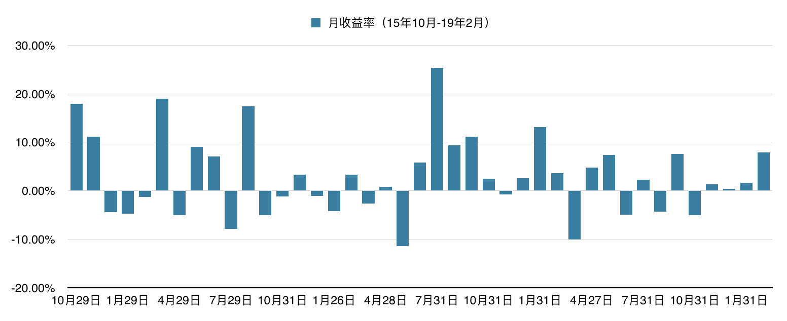
《“找出正确的方法”与“找出正确的问题”》
睡前聊一下
很多时候，一些讨论无法继续，或者聊完你得不到想要的答案，症结在于“你没有提出正确的问题”
老湿经常很尴尬，私信里常常遇到“根本没办法回答的问题”
不用举例，你们就应该懂的
所以老湿经常会讲些思考问题的方式，而不直接去回答问题。
这很像水平很差劲的市场调研，如果你都不清楚不清晰自己想问的范围，不了解你调研的对象，过于宽泛的调查，拿到的结果也是没有任何价值的，甚至会是错误的导向。
下面我给大家提供一个维度，让你们自查，看一看自己的问题是什么
如果你可以有条件看到自己过去一年的交易记录，如果你交易的股票有几十只以上，可以用下面的方式来筛选
如果全年交易累计是亏损的，那么把所有交易按照亏损占比排序，逐步删除影响最大的那些，直到总计为零。
再看这些亏损的单子数量占比多大？如果占比很小或者集中在某几只股票上，那么你要做的，首先是拉黑这些票，其次分析为什么会亏那么多伤那么重？用规则能不能避免掉。
如果占比很大，也不集中在几只票上，也就是亏损分布很均匀。你就要考虑自己的方法是不是有问题？这么稳定的亏钱，肯定需要换个方法。
如果全年交易累计是盈利的，你也可以把亏损影响最大的交易拿出来研究，但是不是要针对性调整，这就是另外一说。
为什么呢？盈亏同源。老湿以前讲过，过度干预不一定是好事。
当然啦，以上这些，都是基于你打“套路拳”为前提，如果每天都是想着一出是一出打“王八拳”碰运气，这些总结也就没什么意义。
一个简单的道理。市场肯定是变化的，只有你的模式相对稳定，才知道市场在怎么变，这样的调整才是有意义的。如果你自身就是变化无常，两个变量放在一起，结果肯定是随机无序的。
基于以上的“总结”，你再来看你要解决什么问题，你才能问出有针对性的问题，老湿也才知道如何“精确”的回答你。
否则，你稀里糊涂的问，我也只能模模糊糊的答。你都不知道自己真正的问题是什么？我知道个鬼。
对吧？
稍微聪明一点，看一两年老湿做交易的套路，心里也应该有点谱。
哪些是变的，哪些是不变的，哪些是可控的，哪些是随机的，哪些是可以预估的，哪些是不需要算的……
这都是套路。
如果不赌，就不知道该如何做。这嘛，老湿也回答不了你，如果我知道，只会赌一次。
天天赌，就是个苕
一个投资者，头个月赚50%，下个月就会亏40%，请问他用几个月时间能够净值翻倍？
一个投资者，第一年收益率50%，第二年收益率-25%，第三年收益率80%，第四年收益率-40%
请问他的年化收益率是多少？
连出两道题，评论让我惊讶，新韭菜真的少了（几年前，还是这些题，哎哟，不谈了）
做股票呢，数学起码要有初中水平，起码知道“输比赢更容易”这个常识
基于这个常识的客观存在，才会有风险评估一说，也就是你审慎评估自己能承受多大幅度的“亏损深度”。
一旦太深，翻身难度就会超乎常理，绝望会导致正常人心理崩溃……
慢就是快，从来不是鸡汤。尽可能控制住每次“亏损深度”，是取得长期复利的关键。
短期回报预期越高，可能遭遇的亏损深度越大。因为想赚快钱而刻意重手选择弹性大的交易，只是放大了净值波动率，并不能保证你能实现净值快速增长。
既想快速翻倍又指望把回撤控制在较小范围，这是不切实际的想法。
所以…… 这个游戏的关键部分是“不能大败”。也就是常说的“控回撤”，或者说“止损”。
如果一直止损，还不是一直亏？
满身是箭的老湿，会告诉你，如果你模式不变的情况下，能一直输你也是个牛人
一把输光容易，还是连输三十把容易？
股票不是期货，不存在亏损100%，放慢交易频率或主动减少本金都可以减慢你亏钱的速度
理论上，小赚小亏和你的净值增长是没有多大关系的。
同理指数，如果拿掉指数单日涨跌2%以上的交易日波动，常理来说，指数应该是一根直线。
也就是说，你的净值波动，主要是少数交易决定的，这才符合自然法则。
问题是，事前你并不知道哪些交易决定了你的净值出现大波动。虽然主观上你当然希望每次交易都是赚钱的，但实际上来看，频率达到一定程度，胜率趋于50%。
人工影响，只是能够影响频率，影响胜率只是短期偏差产生的幻觉。比如信仰。
道理懂了这么多。你还是不知道该怎么做，这很正常。不过，起码能明白老湿为撒这么傻
嗯，我是科学家。上面说的这些，就是我的“信仰”。
不管怎么说，赚了钱就要知足，每年能赚钱是福气，好光景多赚点，差光景少亏点，这就很嗨了……而且“并不慢”
哪有包赚大钱的生意？有倒是有，但不科学（ 命好做撒都挣钱 ）
(2008-01-24 15:17:30)
今天，在昨天所说的4778点受到压制产生震荡。【韶山映山红】“产生震荡”。这时候没有提及延伸扩展5分钟中枢的事。★】4778点，在技术上十分重要，因为这是前期低点，能否出现上去站住，决定了这次下跌的性质与最终完成形式。说句直接的，就是一条多空抉择线。
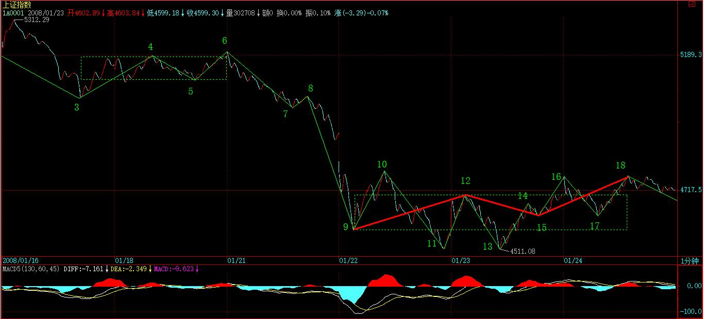
从日线上，今天早上的下跌反而是为了最终构成日的底分型，【韶山映山红】“为了最终构成日的底分型”？没有这个“今天早上的下跌”也一样的可以形成日线底分型啊。怎么理解这个“为了”？★】
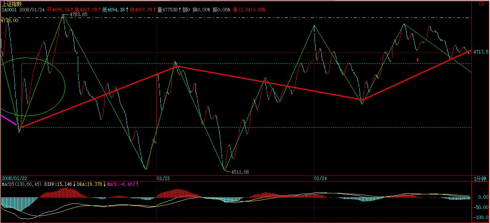
这是一个买点。【韶山映山红】什么买点？★★1分钟下跌趋势，底部的盘整背驰之后的反弹，二买。趋势最后一个中枢盘整带来的买卖点，可以作为一个专题项目，以后研究。】
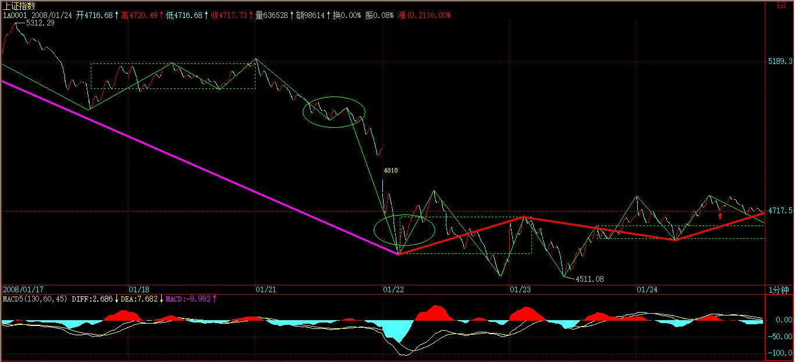
但后面的问题更为关键，就是这底分型能否延伸为笔，还是最终被5日线压制夭折。由于5日线已经下移到4815点，明天大概也就到4778点附近了，因此，这个问题和上面一个问题是同解的，还是4778点能否突破站住的问题。
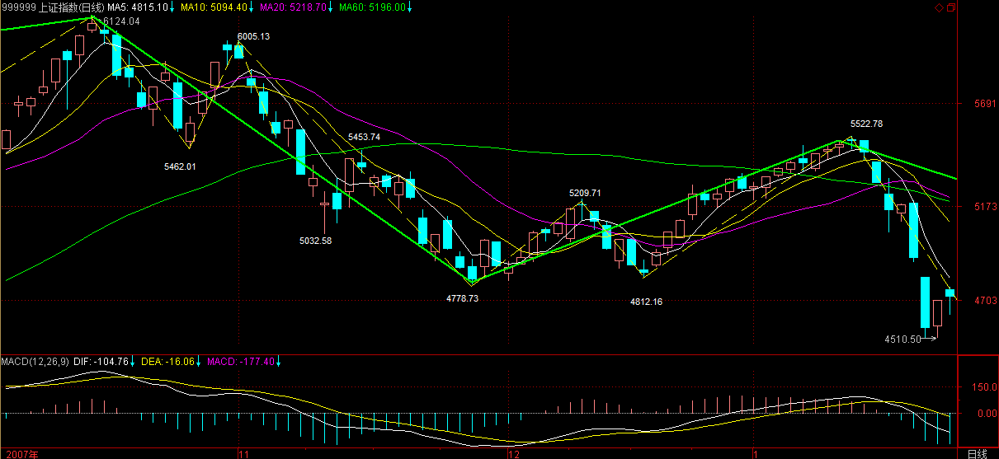
技术上，如果你把今天13点40分前后当成所谓的1分钟第三类买点，那么至少你需要补习两个知识点，一个是线段分类中的第二种情况的处理问题，
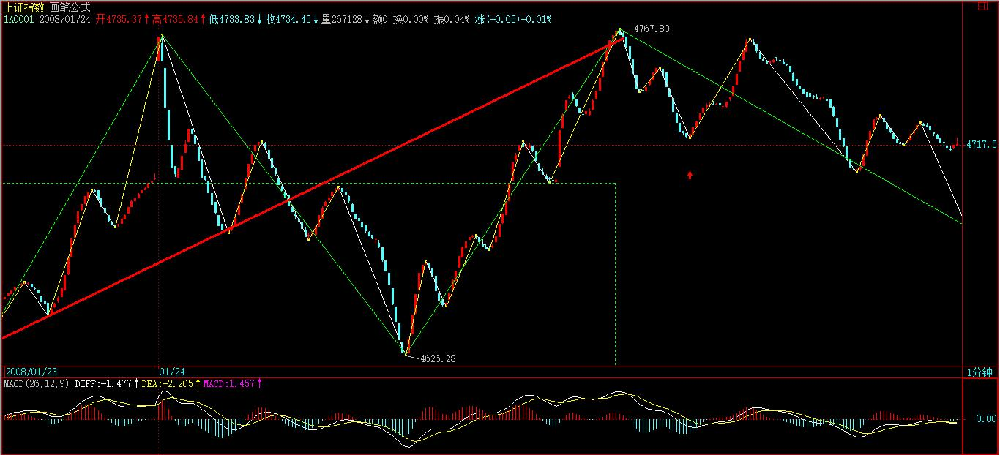
第二是如果线段延伸9段后，需要考虑的就不是1分钟中枢，而是5分钟中枢的问题，这里的次级别变成1分钟走势类型了。【韶山映山红】这里确认延伸9段升级5分钟中枢成立。就是说，即使那个位置线段成立、符合条件，也不是我们应该关注的三买点。】
本ID的理论是纯数学，一就是一，二就二，没有半点可以含糊的地方。不妨再问一个问题，今天究竟走了几个线段？请选择：A、2；B、3；C、4；D、5；E、都不是。
没分清楚的，请去补课。
个股方面，本ID那些股票表现怎么样，都有眼睛，就不用说了。已经有N只创出了新高，而大盘比5522点跌了快1000点。当然，这种走势，最终不能完全脱离大盘，如果大盘站不住4778点而展开新一轮下跌，追高的风险是极大的。
本ID再次强调，本ID不需要任何人抬轿子，如果本ID需要你抬轿子，就不会让各位在8元去买600737了，再次强调，600737这类股票，如果你害怕了，就把本拿出来，留下0成本的继续游戏，没买的就算了。【韶山映山红】600737新疆屯河，2007.03.07中粮屯河，2017.02.17中粮糖业。】
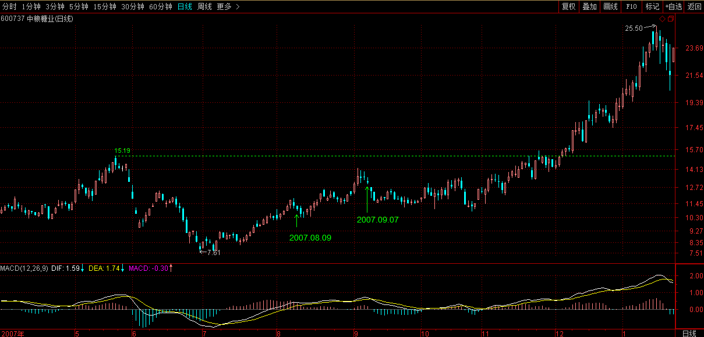
这世界上N的N次方的股票，不需要买本ID的，而且本ID也不喜欢太多人买，因为本ID杀人的时候，可不管亲疏的，对于本ID来说，股票就是筹码，就是纸，本ID杀的是纸，后面是谁，本ID可没兴趣知道。
来这里，就要学会自己顶天立地，有一天，你能在市场游戏里把本ID杀了，本ID最高兴了。可惜，现在，还没有这个人，好无聊啊。
先下，再见。
(2008-01-24 16:15:28)
各位最近受刺激比较多，因此要多多关心身体。本ID就说说有关身体的问题，你会起床吗？
只要不是瘫痪的，大概这个问题不成为一个问题，而实际上，这是一个大问题。太多的人不知道怎么样起床。
起床，不单单是你能从床上蹦起来就算，那只是最表面的，关键是你的肌体功能是否被唤醒。而那种肌体功能没被唤醒的起床，对人的身体损害极大。
起来以后，首先要处理好个人卫生问题，最重要的，是要把鼻子、肺、大肠所对应的清理干净。因为肺和大肠相表里，而肺开与鼻，这样一条线其实是一致的。很多人早上排泄有问题，这是很不好的，原因很多，肯定都是身体里出毛病了，影响了人体正常的功能。起来的时候，注重清理好鼻和肺里在一晚淤积的废物是很重要的，一旦清理通畅了，也会引发大肠气的发动，这样排泄很自然了，身体的一晚堆积的坏东西都能很好地排除干净，这一点极为重要。
这条线所对应的系统里一定不能淤积热毒，否则长期后果很严重，而每天的通常排泄，将极大地保护和排除淤积，这样对其他器官的养护是极为重要的。
另外，眼睛和肝有关，眼睛喜凉，因此，用凉水（不是冰水）清洗眼睛也是很重要的。至于其他的清洗，就看自己的身体状况了。
洗完以后，不是洗洗睡，而是要开始活动，把器官和里面的气血活动起来。最简单的，就是先抬两手过头然后舒展放下，不断重复，把身体舒展开来。如果条件允许，你可以边舒展边唱下面几个音符：35126---63512---，因为这些音符都对应你的内脏，抬手的时候唱3512和6351，放下来的时候唱6---，2---，抬的时候吸，放的时候呼，这样很容易把身体里淤积的浊气排出来。
补充一下，如果你家里条件允许，做这些的时候应该有新鲜空气的地方，另外，如果你觉得唱出来很傻，那也可以暗地里不出声地唱。
然后，你可以扭动你的身体，做各种动作把肌肉、骨头、筋、关节等活动起来。
然后，你要开始单脚站立，脚是很重要的，把气沉到单脚底，然后抬另一只脚，如果你身体不大好，估计站不住，慢慢来，想象气从单脚慢慢升腾起来，全身都在气中漂浮着，各器官慢慢充满元气，一直到头。
注意，你不需要引导，其实你一旦站住，这是自然的感觉。此外，你要注意你的十指，注意其最末端的部位，因为这都是刺激人体经络的重要部位，说穴位比较麻烦，十指末端谁都会，充分活动你的十指，至于是否感觉有气游走，那并不太重要。
当然，你的单脚站立时间不限，长时间后自然有感觉，当然，两脚是可以互换的。
最后，你两脚平立，注意力在脚底整个地下，然后合眼，若入定一样，什么都不想，整个身体，如同被气息所包裹，然后好好地，如同内视一样，从下到上检查一下你的身体，看看有哪里不通畅的，可以想象气息把不通畅的地方都冲开，都包裹起来，全身在一股温暖的气息包裹中，从下到上。
最后，开眼，活动一下整个肢体，如果你的内感比较敏感，你会感觉到所有的器官都自由地舒张开来了，你不需要去排斥或强调这种状态，然后该干什么是什么。
注意，活动之前，可以喝点暖胃、带点糖分的东西，但不要多。最后完成起床活动后，才吃早餐。
身体，十分重要。人身难得，请珍惜。
(2008-01-25 15:17:34)
4778点，其实就是一张纸，但现在人的心理，比纸都脆弱，看来风险教育还是太少，股灾见得还不够多。看看人家恒生指数，上窜下跳地，A股的投资者还是少历练。
相比，深圳成分指数更有领先性，这点在前面已经反复说过。今天这指数已经把本周下跌的缺口给补了，
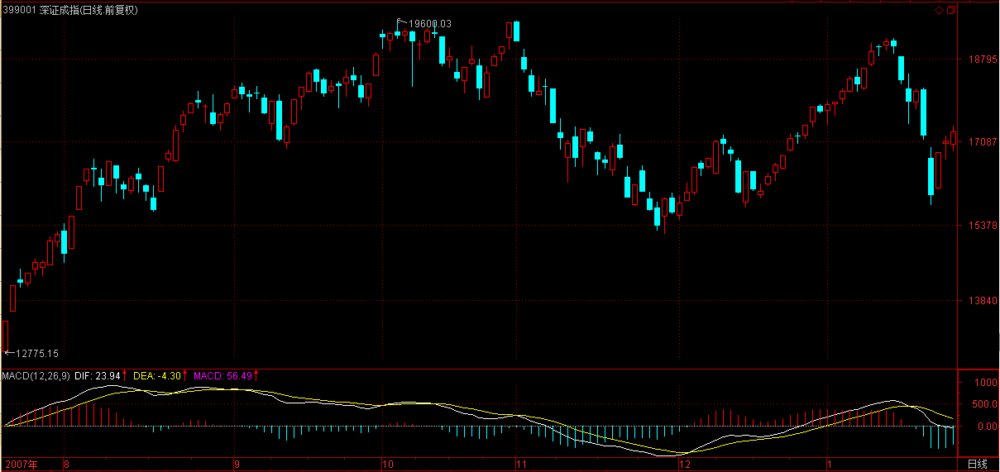
而上海显然需要补课，这课就是下周的任务了。如果周末没什么不招人待见的消息，这任务应该不算是什么大不了的事，下周补缺，多头别无选择，连这都完成不了，多头也就只有当青蛙的命了。
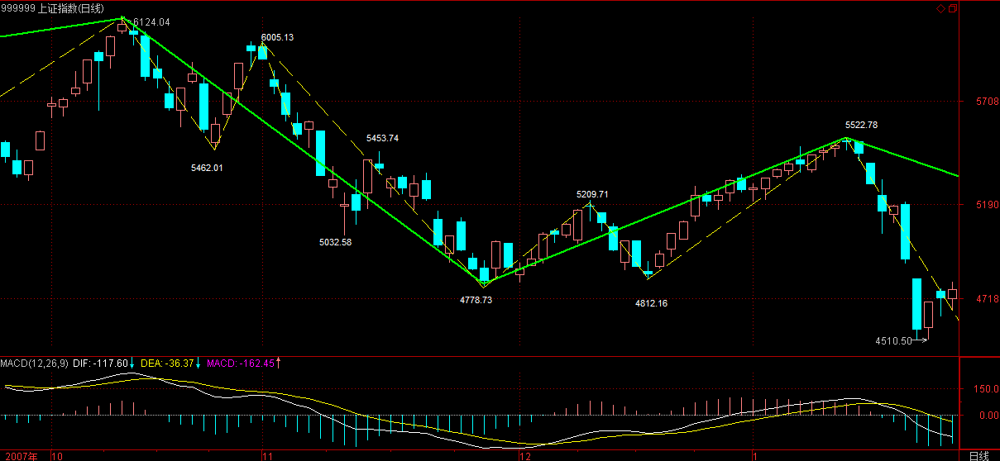
注意，由于目前日线的形态不好，所以，就算这笔延伸出来，后面肯定还有向下的笔来确认的，这个向上笔结束的位置很重要：【韶山映山红】不能好好向上走出空间来，向上笔必然盘整背驰，所以“日线的形态不好”，“后面肯定还有向下的笔来确认”走势的衰竭。★】
一、如果在4818点上下就结束，那么就是最弱的，后面就不亮晶晶了，改10X10米晶晶亮了。【韶山映山红】4818是缺口下沿。不能向上回补缺口，就形成了震荡的孤岛。】
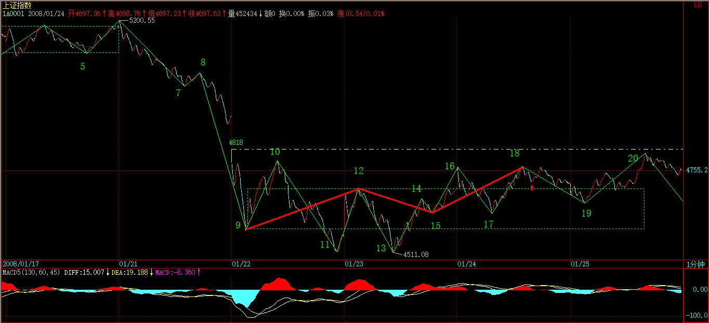
二、如果4918上下结束，这还有较大可能回头形成诸如双底、头肩底之类的形态。【韶山映山红】4918是缺口上沿。回补缺口表示反弹的火种还在。】
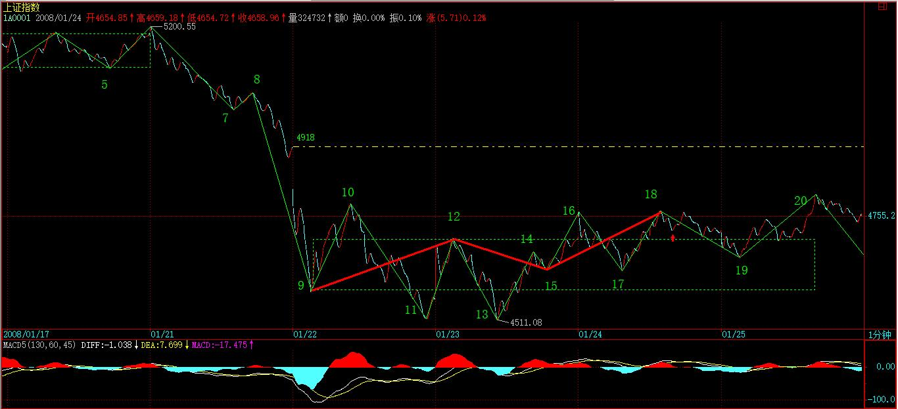
三、冲上5000点后再结束，那么形态上稍微好转了，后面只要回头幅度不大，多头又可以重新架设炮台，再次进攻了。【韶山映山红】回到前面中枢第一个下跌的转折点。】
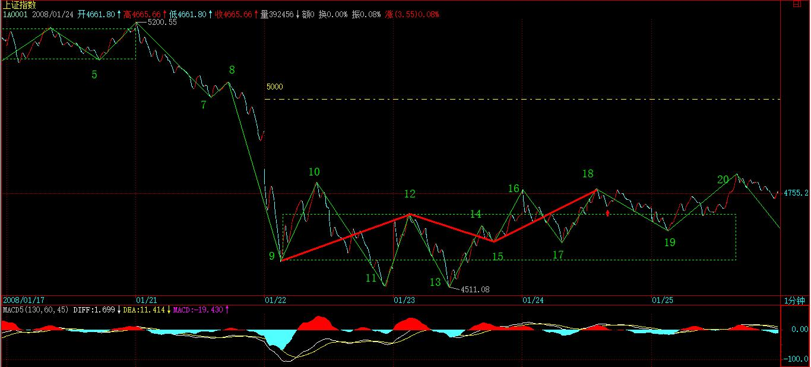
因此，这个向上笔的结束位置很重要，市场最终的走势，走出来自然就当下辨别了，无须预测。【韶山映山红】日线向上笔。】
这两天的走势，对底分型的具体操作是一个很好的锻炼。
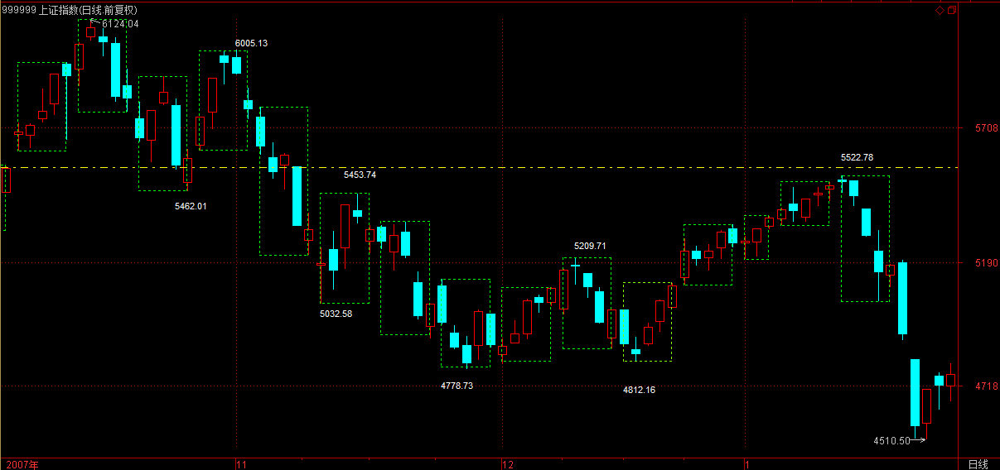
依据底分型的买卖，不是今天才买，而是昨天探底不创新低时就买，当然，如果你技术好一点，你可以确认这个探低是震荡性质的。【韶山映山红】怎么“确认这个探低是震荡性质的”？★趋势的最后一个中枢没有趋势背驰，就注定要震荡，除非某一个小转大带来转折。】
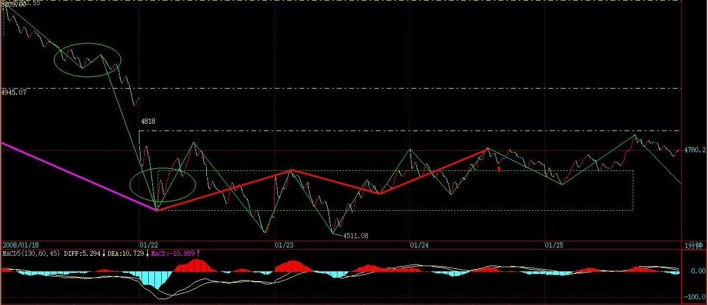
注意，分型的操作，不是分型已经确认形成才操作，那时候已经是“已病”状态，就太晚了，这一点必须明确。
例如，昨天买了以后，今天走势继续保持（1，1）形态，所以可以不管，等到出现顶分型时再处理。当然，说起来简单，实际操作，又少不了诸多的练习才能把握。
其实，这底分型的操作，就算是最难搞的认沽也是有效的，你看580989这几天的日线，里面稍微复杂点，有一个包含关系，你看看前面0.739元开始的下跌，最终跌了50%以后有了一个底分型，【韶山映山红】580989南航JTP1】
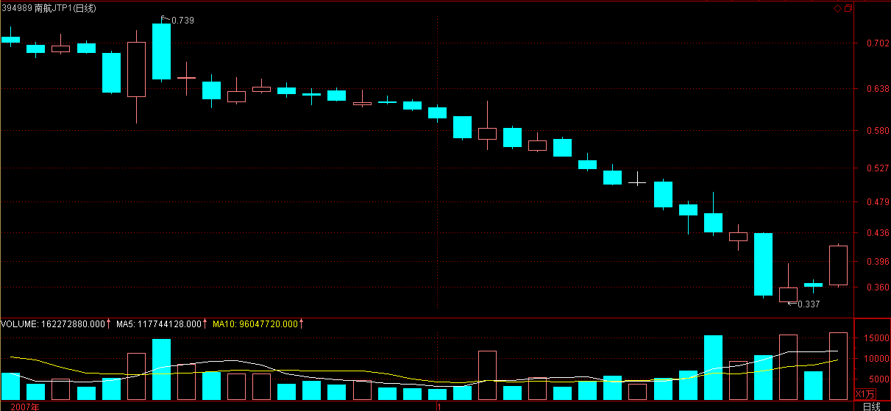
买入点也就今天早上不创新低的时候。【韶山映山红】日线底分型，寻找小级别中枢的三买，这个实例不是线段中枢的三买，是笔中枢级别的三买。】
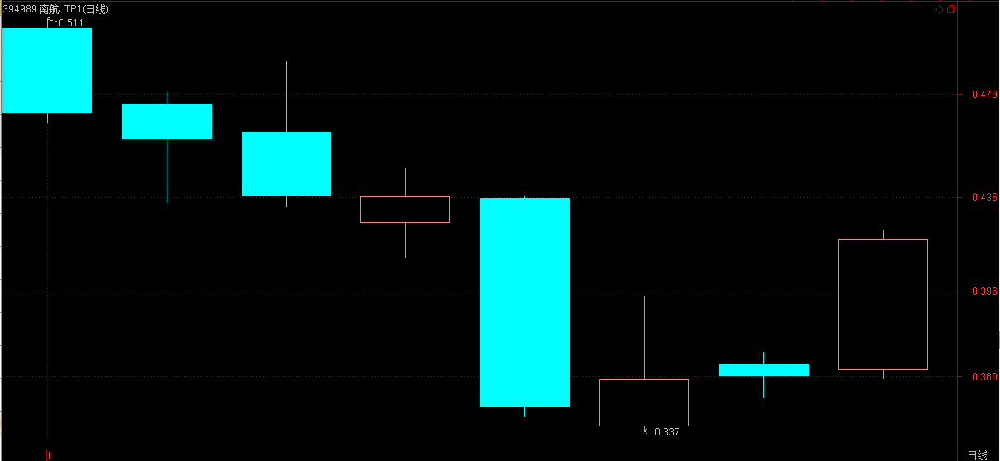
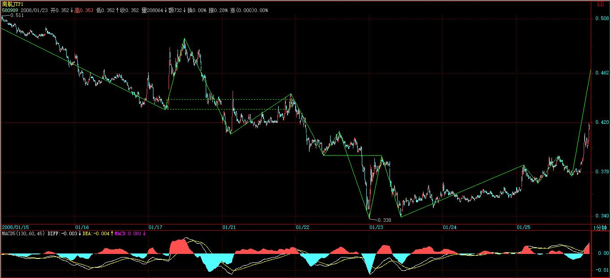
注意，这只是上课，认沽可不要乱玩，你没这本事，就注定要倾家荡产的，不是开玩笑。这只是说明，本ID的理论，对这么难缠的认沽，也是可以轻松应付的，就别说一般的股票了。
至于昨天问题的答案，很高兴看到大多数人都回答正确，当然就是第三段还没完成了，问题就这么简单。
周末，又是大冬天的，都去补补，大盘下周任务是补缺口，各位就缺什么补什么，补钙、补牙、补肾、补心、补脑、补衣服、补课，诸如此类，选择去吧。
先下，再见。
(2008-01-26 10:23:21)
昨夜熬梦，今早起步老杜《登高》韵记之，诗曰：
步老杜《登高》韵记梦
缠中说禅
海啸山癫参斗哀
雷烹电沸夜惊回
熯天血雨追风下
坼地悲歌踏梦来
岁月无情空掷泪
乾坤多病怒登台
茫茫大野归何处
万古云霄一酒杯
【韶山映山红】熯：hàn，干燥，干枯。坼：chè，裂开。】
《登高》杜甫
风急天高猿啸哀，渚清沙白鸟飞回。
无边落木萧萧下，不尽长江滚滚来。
万里悲秋常作客，百年多病独登台。
艰难苦恨繁霜鬓，潦倒新停浊酒杯。
(2008-01-27 10:15:10)
最后毁掉佛教的，一定是佛门中人，所谓狮子虫。当然，真正的佛教，不去不来，不生不灭，无所谓毁掉。有生就有灭，能毁掉的，不过是一般人眼里的某种的所谓佛教形态。
那些看佛教大词典、哲学讲义去懂佛教的垃圾虫，当然成不了狮子虫。能当狮子虫的，都是些所谓的大德。这些人，三藏大概也看了一藏、佛言佛语大概也记了一筐，修行大概也折腾了几下，忽悠一些众生，那还不是玩一样？
这类人，在世界各地多了去了，当然，更多的是披着各色的心灵导师的外衣，信众多如牛毛。众生愚痴，总希望在自己之外找一个拐杖，所有的这类货色就因此而有了市场。
所有这些玩意，无一不是在意识之中打转转，生死到来，顶个屁用。鉴别这些人的第一步，你就看，这些教导的玩意，生死到来，有用否？就算你练得一丝所谓的妄念都没有，心无分别到看大盘从10000点到0点与0点到10000点是一回事情，别人打了你两边脸你还要把屁股送上受虐，可以1000天不吃饭不喝水照样可以N的平方P，诸如此类，生死到来，有用吗？
还有些，承诺你死了以后，可以到这里到那里，你的身体可以化为一片光，飞到哪里去；经过审判你可以进天国，你的仇人都下地狱；你的身体毁灭了，你的灵魂永生，诸如此类的废话，都不过是人的贪嗔痴疑慢做怪，就像埃及的法老要把自己变成那干尸去求永生一样可笑。
这些人，不过是很粗劣的伎俩，还算不了被佛所魔，不过是自我所魔罢了。
不妨看看这些无聊人忽悠的一些词语：
“学会活在当下”：请问，有一个在任何一刻能不是“活在当下”的吗？活，就是当下，有离开当下的活吗？不管你学不学，就算你坚决拒绝，强力摆脱，但无论你如何折腾，你的每一刻每一秒都只是活在当下。有人说，这里的活在当下指的是你的意识，请问，你的当下难道没有意识？任何人的当下都是六识共转的，不管你意识什么，你都在当下。请问，一句“学会活在当下”忽悠了多少人？
“放下分别心”：请问，放下分别心的难道就不是分别心？没有分别，何来放下不放下？更重要的是，放下所谓的分别心后，就是最大的分别，因为，这世界与时空就被这所谓的放下分裂成了放下前与放下后，这所谓的“放下分别心”，反而创造了最大的分别。请问，谁“放下分别心”？这个谁和这个放下是同是别？如果是同，那么，谁就是放下，何必再放下；如果是别，谁和放下就被分别了，何来放下分别心？这句废话，又不知道忽悠了多少人。
“修炼到一心不乱”：能修炼的，就能毁坏，你那所谓的“一心不乱”，不过是自我淫乱，内闭幽明而不自知；不乱，恰恰就是大乱，一心反而是多心，那“一心不乱”的所谓境界，生死门前就烟消云散去了。而这句烂话，又忽悠了多少人？
诸如此类的话太多，没兴趣一一分析。这些，都不能归之于佛魔难除的范畴。
有人问，那么是不是就是“见佛杀佛”才能破佛魔啊？可笑，能被杀能是佛吗？你杀的不过是自己的幻象，而这个杀，就是更大的幻象。那些以为“见佛杀佛”就是什么高深境界的，连那看到黄叶就不哭的小孩都不如。
佛魔难除，就是你连佛魔难除的境界都难以梦到，你玩弄的，不过都是些自我幻象。
人，总是自己骗自己；人，只能自己骗自己。没有你自己，谁都骗不到你。
这世界就是这么简单，人啊人。
【网文】如何把握热点？答：活在当下！
胜利的歌声
2015-10-06 11:20
既然谈到热点，就是中短线交易，长线交易与热点无关，甚至还有意回避热点，因为长线追逐的是长跑。所以，喜欢短线交易的朋友要注意了。
那么，如何炒热点呢？
答：热点炒作的关键是活在当下。
什么意思？
就是哪个热点正在流行、正在发烧就炒哪个？
有人说，你这不是废话吗？
还真不是！
没有经历过炒热点心路历程的人还真搞不懂其中的诡谲之处。我就从我的炒股心路谈谈对这个问题的看法。
第一个误区是炒冷饭，炒刚刚过去的热点。
从面子上，很多人不愿意承认自己炒冷饭，但是事实上很多股民确实活在过去。君不见，银行地产作为热点已经过去很多年了，现在很多人一买股票就喜欢买银行地产；君不见，有色金属和券商题材早已是明日黄花，但是很多人还恋恋不忘。这都是典型的炒过去。市场上的热点是轮番上攻，一般而言，在市场热点初期，大多数人是怀疑；当热点炒作如火如荼的时候，大多人又觉得股价高，担心害怕，而当热点刚刚想退潮，价格经历一波下跌，很多人又觉得股价回归合理，于是开始拾人牙慧、炒冷饭。事实上，这个时候热点已经像一阵风一样刮过去了，新的热点已经转移到其他题材上面了，再炒以前那个热点当然就是炒冷饭。比如2014年春节刚过，特斯拉作为热点被炒作开来，但最初很多人看不懂，等到市场曝光特斯拉是什么东西的时候，股价已经涨得很高了，很多人又不敢买，眼看着股价一路上涨。而等题材炒作结束，原先觉得股价高的人又觉得股价跌下来了，于是马上就冲进去，这恰恰是热点炒作最容易犯的毛病。当热点正在劲头上不去炒，非要等热点冷了再去炒，这就是慢半拍，表面上是炒热点，其实连热点的影都没扑到。说好听就踏错热点，说不好听叫叶公好龙。我刚刚炒股时也完全是这个心态，犹豫、害怕、冲上去、被套，四部曲挥之不去。后来我反复思考问题出在哪里，终于有一天我想明白了，我那不叫炒热点，叫炒剩饭。真在的炒热点就是发现热点就追上去，而不是等热点冷下来再炒。所以，很多人口口声声说自己喜欢炒热点，但仔细回想一下，也许他从来没有真正炒过热点。
容易把剩饭当成热点有一个很大的原因：信息捕捉不灵敏。当热点来的时候，最开始表现在股价暴涨上，很多人都不知道为什么涨，甚至媒体也没有反应过来。当股价涨高了，记者才会写文章告诉你为什么涨，这时候热点才开始浮出水平，其实股价已经热过一阵子了。此时对很多人来说是最关键的是买还是观望？买会不会被套，不买会不会错过？这种心理斗争不仅是勇气问题，还涉及到对热点持续度和行情阶段的把握。如果这个阶段没有买，假如股价跌了，很多人就会庆幸，而假如股价涨了，很多人又会追悔莫及。我们看看第二种情况，追悔莫及后开始反思，这么好的行情和题材，我居然给错过了，不行，我要补过。股价涨得越猛，越会激发这种悔恨意识。等到股价一旦下跌或者小幅度洗盘，悔恨的人就会大举追上去，而这恰恰是高点，至少是短线高位的时候。其实，这个时候买已经不叫追热点，而叫追尾声。所以，我要更正的第一误区就是把剩饭和尾声当热点。真正的炒热点是炒刚刚被挖掘的热点，最好是在大家还处于怀疑和犹豫的时候介入。
热点来的时候不敢炒，热点走的时候无限留恋，这是慢半拍。对当下的热点迟钝，对过去的热点记忆犹新，这是活在过去。很多散户都有这个通病，对炒作正酣的热点缺乏敏锐的观察，或者缺乏勇气去介入，而对过去的反复唠叨不忍离弃。这就像新朝已建立，很多人还活在旧朝，无法与时俱进，迟早会被历史抛弃的。
第二个误区是总盼着新的热点。
这点我体会最深。我刚开始炒股的时候，当遇到热点会很兴奋，热点红红火火那么能涨，多么羡慕人呀，我要是能提前逮住热点该多好呀。但我那时的想法不是参与到热点中去，而是想着如何挖掘下一个热点，潜伏进去，然后等着赚。我的这种做法叫等热点。当我还是菜鸟时，我看到火爆的热点就幻想：我也会有那么一天，我会逮住下一个热点。这样的后果是什么呢？就是眼睁睁的看着当前的热点在我的眼前眼皮子底下表演，我视而不见，内心却天天盼着下一个热点来临。而当下一个热点真的来临的时候，我又想有点害怕，这个热点已经“过热”了，我还在等下一个吧。我总是这样错过一个又一个热点，而我心目中那个可以等待的、可以“提前”买入的热点一直没又到来。
这就是活在未来，总想着明天会如何。股市里有很多人都是这种思想。当一个热点流行开来的时候，他们会说一句话：已经涨很多了喔！潜台词的是：我还是寻找下一个涨幅小的热点吧。问题是，热点之所以成为热点，就是表现在股价上已经涨了一段，这是炒热点必须付出的代价。如果你炒长线，你可以左侧建仓，可以在大周期的底部布局，像李嘉诚段永平史玉柱一样，但是如果你要炒短线要炒热点，必须敢于在股价暴动的时候及时跟进。
后来，我就告诉自己，不要想着明天，就想今天、现在、此刻，买还是不买？我把时间从未来拉回今天，正视现实、正视行情、正视实盘现场。人又不是神，谁能预测明天哪个新热点会冒出来？与其等着明天，不如做好今天。
等待明天热点还有一个喜新厌旧心里在作怪。不错，股市是喜新厌旧，但也不是明天马上就抛弃今天。很多时候，明天的热点也会是今天的延续。过去，我的内心里总认为新的热点比今天的热点更刺激、更有盼头。后来的无数事实告诉我，完全错误。热点的刺激和火爆程度，完全不是由热点出现的时间决定。与其盼着新的热点，不如炒好今天的热点。事实上，把握不好今天热点的人，也永远把握不好明天的热点。
误区一是炒剩饭，误区二是炒明天的热点，那有人就问啦，炒晚了不好，炒早了也不好，不去炒更不好，等着下一个热点还是不好，那到底如何是好？答：活在今天。
其实，误区一和误区二的本质都是对当下发生的事视而不见，误区一是总想在过去的热点上做文章，误区二是总想在明天的热点上做文章。它们共同的错误是把握不住今天，对当下熟视无睹。
活在当下就是炒今天的热点、炒现在的热点。一般而言，今天的热点继续会是明天的热点甚至是后天大后天的热点，这是大概率事件；而今天的热点明天马上结束，明天冷不丁来个新的热点，后天又冒出另外一个热点，这种现象是小概率事件。任何东西都有惯性，主力炒作也要有个时间差，不可能一天换一个热点，就这么换来换去。股市更常见的是今天的热点明天继续，明天的热点后天也会有所表现，一直到这个热点被炒得没有利用价值，或者见光死。所以，担心什么？如果你是短线客，你不买今天的热点你买什么？难道买昨天的热点来炒冷饭？还是等着明天自己发明个新的热点？
记得有个哲学家说过，人在什么阶段就应该做那个阶段的事，青春时就应该锋芒毕露血气方刚，中年时就应该老成持重，如果你在青春总想着把自己搞得老气横秋，那叫搞乱了次序。过不好今天的人，他也过不好明天；总活在过去的人，他没有未来。活在当下，活在今天，这才是精彩的人生。
现在的热点和目前的行情主流才是我们的着眼点，将来的热点我们不知道，也猜不准，过去的热点我们不想留恋也留不住，我们唯一能做的就是活在现在、活在这儿，这就是我倡导的参与热点的总体思路。炒股模式其实基本相似，操作不好今天的热点，也很难把握好明天的热点，太阳低下没有新鲜的事。其实股票都是一个个符号，我们不靠它分红派息，股票对我们就是一个个的代码，关键的是操作模式，明天的热点怎么操作其实早在几年前都已经出现，而且还继续出现，我们把握好这个模式就行了，只要能熟练地用它来操作好今天的热点，也就能熟练的用它来操作好了一切热点。
2008年春节刚过，农业股行情来了，我记得当时我看到农业股被炒作起来我反而有点紧张，因为买也不是不买也不是，我害怕这只是一阵风，也许第二天农业股就不是热点了。没想到第二天农业股又疯狂，隔几天农业股还在疯狂，再隔几天农业股依然高烧不退，就这样我眼睁睁得看着农业股在我眼面前蹦来蹦去，失去了大好的热点行情。后来我突然悟到，一段行情要来的时候，不要总担心它明天就结束，因为今天的热点很可能也是明天的热点，也许它还是最近一段时间的热点，有时候错过前几天也许就永远错过那波热点。炒的是短线，就像找一夜情，只要长得漂亮就可以了，只要当时的那一刹那有感觉就OK了。也许明天的热点会转移，没关系，我止损就是了。
注：本文系原创，捻花成佛出品，龙头股系列文章之一。国庆期间，本人没有出去凑热闹，就写点文章神交各路高手。希望能遇到真正的高手，彼此交往内心的不为人道的绝招。本人之所以写出自己的真货，就是告诉识货人，我愿意以货易货。
该文和前几篇文章引自一本书，是否写上我觉得很矛盾。一方面，如果注明则有人说是卖书，其实书已经把版权授予别人，卖多少与我没有一毛钱的利益。另一方面，如果不注明，万一遇到有缘人真心喜欢这些文章，想接着读更多，也不知道去哪里找。我做的只是告诉吃鸡蛋的人，如果你们觉得鸡蛋好吃，母鸡在哪里。当然，还有一些小小的虚荣心作怪，本人随便从书中摘录部分章节发表，看看是否有知音？看看受欢迎程度如何？仅此而已。也有人说，你写书是先出名，再发行私募骗人，云云。我告诉你，用不着，本人现在已经发行私募了，早就有自己的产品，我不需要这个东西来给我知名度。这就是为什么，无论我在哪里写文章，尽量不注明真实的姓名，都是昵称发表文章。我不署真名，就是想看看在一个完全陌生的世界、仅仅凭借我的见解和文字，能否交到真正的高手、能否赢得高水平的知音。
国庆快完了，明天就踏入繁忙的工作，是否还继续发表后续文章，看心情吧。
------
皇甫娇 2015-10-07 07:27
虽然李佛摩尔是克罗的精神导师。但是显然克罗的全面性攻防更胜一筹。
原帖由坚韧隐忍在2015-10-06 17:51发表
今天当当下单《股市极客思考录---十年磨一剑之龙头股战法》，同时还买了李费佛的两本书，虽然早就有，忍不住还是买了。感觉《股市极客思考录》会一样精彩。
-------------
皇甫娇 2015-10-07 07:34
说的很好。点亮。
这是因为题材股分类的不同。
那些长期政策扶持的。但是目前尚未有业绩明显改善的。比如你举例的以及环保类以前的新能源类就是有明显的波段炒作机会。
而一些短暂的题材引发的热点股一次完成。冷饭就不要不要了。
热点背后的原因有很多种。单一的论述有点片面。
原帖由寂寞和弦在2015-10-06 22:11发表
楼主把对热点的把握方式分为三种：一是炒冷饭（前期热点），二是等待下一个热点，三是炒当下的最热点。
并把前两个方法定义为错误的方法 ，坚持活在当下，或者说炒当下的热点才是正确的方法。
在下以为不妥，在下认为这三种方式都是可行的，重要的是对热点的切入方式以及交易的周期需要做一个量化的标准。
而且对于不同的热点还需要做一定程度的分仓。
一：炒冷饭并非不可取，很多热点是可以反复的，如大数据，[tag]央企改革[/tag]，等概念都有过反复炒做的机会。在技术上形态上往往形成不同周期的第二波行情。如果我们的交易系统是捕捉这种第二波行情，那么炒冷饭或许是最好的选择。
二：等待下一个热点：如果当下的热点所处的位置不符合我们系统入场的标准，那最好的方法就是等待下一个热点。不能因为他是当下的热点勉强介入。因为不同位置介入面临的风险和收益的期望值都不一样，
三：当下的热点：如果当下的热点符合我们的入场标准，当然是要按规则进的。如果不符合，我们同样需要等待和观察，规则比热点更重要。
-------------
(2008-01-28 15:20:28)
周五说580989，并不是让一般人买，这点说得很清楚，今天继续说580989，主要是两点，这两点都值得所有想学点东西的人学习：【韶山映山红】580989南航JTP1】
1、上周五启动580989，【韶山映山红】2008.01.25.】正在于一个消息面上的不稳定性，因此有了一个大面积对冲风险的选择。
2、这个启动，完美地体现本ID理论，后面再详细分析。
【韶山映山红】580989 南航 JTP1】
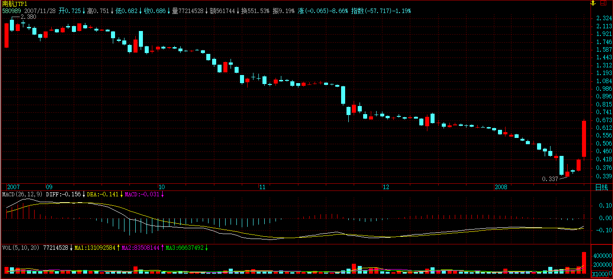
强烈注意，580989几个月后连纸都不如，特别在上涨这么多以后，任何人都不能再参加了，
【韶山映山红】580989 南航 JTP1】
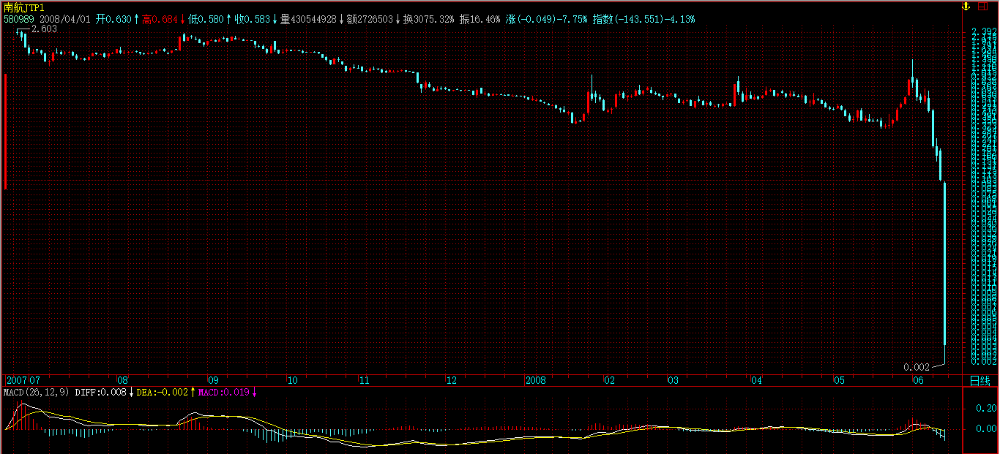
除非你是在底分型时买入的而且有极高的震荡技术。这东西最后的命运是0，千万注意。
【韶山映山红】580989 南航 JTP1】
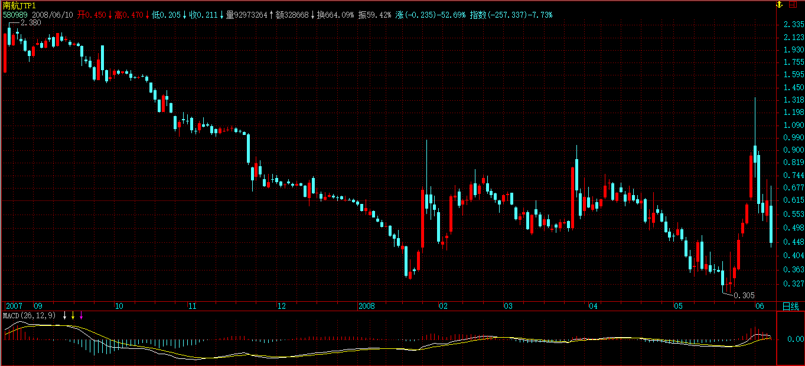
先回到大盘，周末，都是不招人待见的消息，最严重的，就是中石油准备有10亿上来这条，【韶山映山红】2008年2月5日，中石油10亿股的A股发行法人配售股上市。之前2007年11月5日上市的时候流通股一共30亿股。】不过这正好完成了本ID说的那个故事所说的目标，当然，那个目标只是一个大概数，就是让最早买的有腰斩的快感，如此而已。等那10亿出来，其活力会有所增加，但只要没有期货，还是折腾的命，暂时没有大戏，而且也不能有大戏，否则我们可爱的题材股怎么办？
大盘今天开盘就选择“ 一、如果在4818点上下就结束，那么就是最弱的，后面就不亮晶晶了，改10X10米晶晶亮了。”
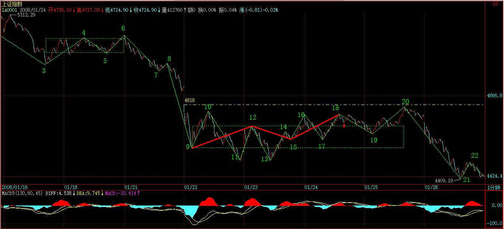
一个线段就下来了400点，然后是一个线段的反弹，这反弹只要不能重新回来原来震荡区间，【韶山映山红】“原来震荡区间”是指5分钟中枢的震荡区间。】就有逐步扩展成5分钟第三类卖点的风险。【韶山映山红】21-22是第二种情况，当日收盘还不能完全确认走完。要有1分钟离开、1分钟返回，所以说“逐步扩展”。】
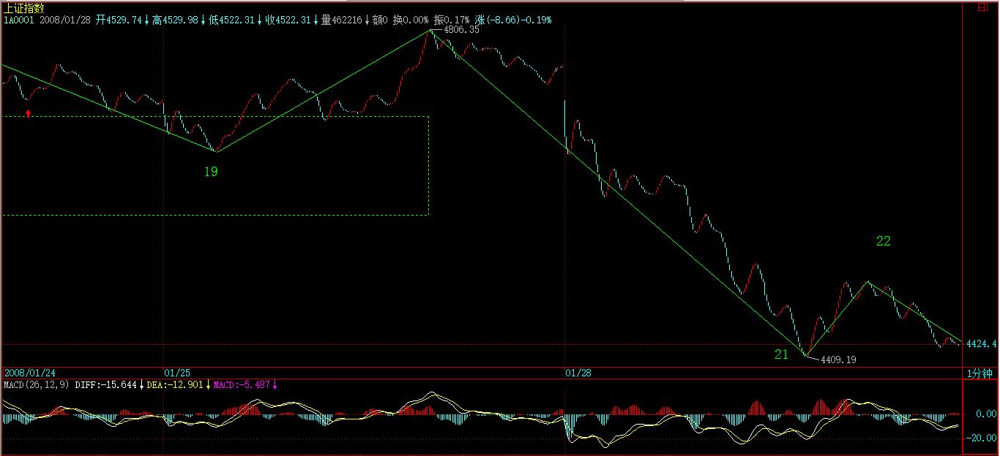
关于目前的情况，前面已经很明确地说过，最坏的情况就是在4778点下形成5分钟下跌的第一个中枢，一旦这种情况出现，后面的下跌可能更加惨烈。【韶山映山红】“一旦这种情况出现”，意思是说，至此还不算出现？也就是说，中枢分析的角度，已经有了5分钟中枢，走势类型分析的角度，还只是1分钟下跌趋势+1分钟盘整向上？以后研究。★“这种情况”是指“在4778点下形成5分钟下跌的第一个中枢”，重点不是在4778点下形成5分钟中枢，重点是形成5分钟下跌的第一个中枢。更准确的说，“最坏的情况”是，现在这个5分钟中枢不是盘整中枢，而是5分钟下跌趋势的第一个中枢。】
那么，我们可以讨论什么情况才可能出现这种情况，大概唯一的可能就是美国出现1987年那样的崩盘，【韶山映山红】什么情况才可能出现5分钟下跌趋势？为什么缠师这么确信不会轻易出现？以后研究。★“一般情况下是不会出现这种最坏走势的，毕竟年线在那里，”当日的MA250是4371.94点。当日最低点是4409.08点。近在咫尺。】说实话，本ID特愿意见到这一点，如果在短期里出现这样，估计580989会被爆拉到N元，
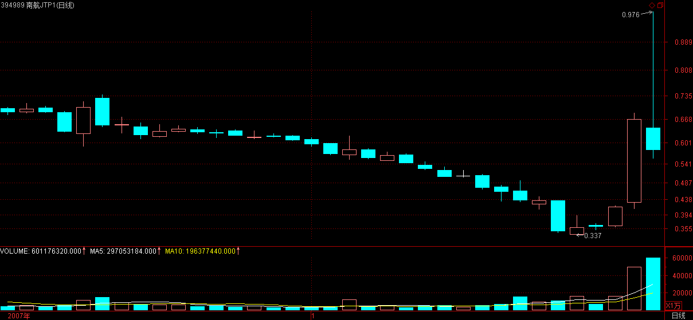
更重要的，看到美国鬼子不爽本ID总是比较爽的，所以本ID并不介意这种情况的出现。但99.999%都不会出现如此情况，今晚，美国是否继续减息，这点很重要。
一般情况下是不会出现这种最坏走势的，毕竟年线在那里，【韶山映山红】当日的年线MA250是4371.94点。当日最低点是4409.08点。近在咫尺。】在关于今年的展望里，本ID已经明确说过，今年至少见两次年线，第一次应该是喜剧。
那么次坏的情况，就是这5分钟中枢是盘整类型中的，【韶山映山红】再次说明，5分钟中枢已经成立，只是判断她是盘整中枢还是趋势中枢。】最终扩展成30分钟的。这种情况，不过依然是震荡局面，没什么大不了的。
最好的情况，就是这5分钟又震回去，最后还震出第三类买点来，【韶山映山红】这样就不一定还是5分钟中枢的划分了。】但你的思维里千万不能被这种最好的走势完全占据，这样会蒙住你自己的眼睛。
个股方面，今天还有不止一只股票顽强地走出新高，一旦大盘走稳，该爆发的都要爆发，仔细看好借机洗盘的，题材股继续火暴。
下面，请好好分析一下580989的图，里面的标准性一目了然，60分钟上从2.3下来的底背驰，然后今天回拉到第一个红箭头指出的中枢中，完全符合本ID的理论最低回拉幅度的走势。后面很简单，首先是围绕该中枢的震荡，如果有机会，例如美国1987年，那么就一飞冲天，如果到4、5月美国还不1987，那么就清0，如此简单。
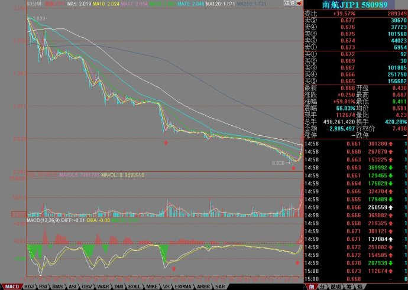
注意，这是学习材料，一般人绝对不能介入，否则一切后果自己负责。
(2008-01-28 15:48:56)
最近，美国次级债，使得那些一度被国内金融投资界当成偶像膜拜的美国大金融机构大丢其脸、大伤其气。金融投资领域，从来就没有偶像，风险对任何人都是公平的，曾经让你辉煌的可能就是让你最后葬身的陷阱，这一点，大概不会有任何中美的差别。
由此不禁想到，如果我们现在这些在糖水中泡大的券商、基金、金融机构，一旦面对如此局面，又有多少能幸免？市场经济，不是伊甸园，类似的事情，又有谁能担保永远不会出现？
现在，都喜欢一窝蜂地全球化、国际化，而我们真的有必要去全球化、国际化吗？
肉，烂在自己的锅里，总比烂在别人的锅里强。那些全球化、国际化背后，从来少不了的是国家间的利益分配。
而更重要的是，全球化、国际化，从来都有一个主导国家的问题，现在，不用讳言，一直以来的全球化，都是美国所主导的。而我们现在所谓的全球化潮流，说白了，就是美式引导的一种全球经济游戏，一切规则都被别人所主导，这种游戏，我们真有那么必要死皮赖脸地去参加？
中国，需要的是中国式的全球化。中国的市场必然成为全球最大的，有了这个吸引源，我们完全可以整合起东亚甚至整个亚洲的市场，一个亚洲的大经济体，甚至可以包括俄罗斯。这样一个巨大的体系里，大概已经完全没有全球化的必要了，因为全球都会化在这巨大经济体的强大吸引力之中。【韶山映山红】一带一路。】
全球化，不是让全球把我们自己给化了，而是以我为吸引源，不断震荡整合出更大的吸引源，从而把全球化于其中，这样的全球化，大概才是中国人该真正追求的。一个中俄印日四核发动的大亚洲经济体，笼括了全球半数以上的人口和经济规模，难道还不能改变世界经济的秩序和规则？秩序、规则，从来都不是先验的，而是现实利益合力的结果。一切皆有可能，而可能是实际操作出来的。
说实在话，对我们的企业，特别是金融投资企业，按照美式游戏规则参与全球化的前景，真的很难抱乐观的态度。就像打麻将，上下对台都是别人一伙的，你能赢的可能性基本为0。有人可能反驳，为什么我们的制造业能取得辉煌成就？那不过是别人的游戏重心并不在此。
我们那些糖水中泡大的券商等，现在还靠诸如权证增设去抢夺小散户等恶劣伎俩赚钱养肥自己，试想，在如今美式的国际化、全球化市场里，能有这样的好事？靠类似手段长大的机构，一旦出去面对那些大鳄虎狼，能有好果子吃？
所以，最好的策略，还在待在自己家里，家里横并不是什么难听的事情，关键你的家够大。中国经济这个家，确实够大了，只要我们按部就班成为世界最大的市场、最大的吸引源，我们就能将我们的游戏规则给全球化了。这样，我们这些在糖水中泡大的券商等，至少也能在自己家里把最好的位置占住，至少有一个地利人和的优势，如果在自己家里开麻将还输给外来的，那最好的处理，就是先买一块豆腐留给自己撞头去吧。
如此，大概一旦发生类似这次次贷般的危机，我们也能很好的处理，至少全球都可以陪着我们一起分担其压力，如现在的美国；万一我们那些糖水中泡大的券商等出现什么问题，我们还可以让外面的资金来入股填窟窿，如这次美国那几家大名鼎鼎的机构一样。
所以，解决问题，最关键还是让我们的金融市场成为全球老大，把我们的经济规模搞成全球老大，这样，肉无论怎样烂，都烂在我们自己的锅里，那时候，又有什么可值得担心的呢？
这世界，没有谁比谁更聪明，特别在最高端的市场游戏中。关键是规则的制订以及在哪里开牌桌的问题，同样功力的人，输赢其实都在这规则与地利人和之上。我们的战略，不能把自己先假设为超人，别人都是傻子。
我们现在最大的优势，就是中国经济起飞的“势”，这“势”，是国运、也是经济发展规律所必然呈现的，这是谁都夺不去的。得此“势”，则平凡之辈也可一飞冲天，我们只需要借此“势”而成就我们的全球经济战略，而最大的失败，就是把此“势”给自我扼杀了。
我们生在这样的时代，是幸运的，因为我们刚好处在中国经济爆炸性的主升浪中，这里，只需要顺势而为，并不需要超人，因为任何的超人，不过顺其“势”而成就之而已。能顺其“势”而成就之，让全球化成为中国式的，这大概就是我们最该干的事情了。
(2008-01-28 18:54:02)
由于每个人的理解能力相差太远，所以有些事情本ID必须再次说说，就是580989不是谁都能玩的，按照理论的最基本回拉，今天也完成了，
【韶山映山红】580989 南航 JTP1】
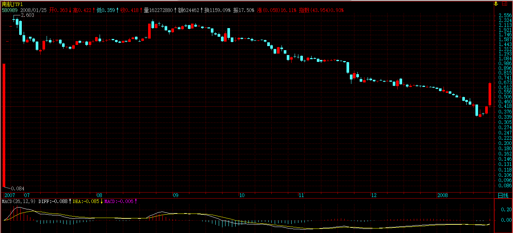
后面出现任何大的下跌都是一点不奇怪的，千万别见到这两天涨了快100%就追上去。你想想，你连股票都操作不好，怎么可能操作好权证？一定要注意，本ID可不想有人因为一时的贪念而倾家荡产。
【韶山映山红】580989 南航 JTP1】
当然，如果你技术很好，那么后面震荡的机会很多，但这一切都是合力的，受很多因素的影响，毕竟这玩意还面临可以大量创设，现在用的闪电战，这里对赌的力量太多，没那水平，就别在里面折腾。
股票跌下来，就是把赢利的空间给再次打开，操作关键是纪律，是长期的规范操作。
做股票就如同一个将军率领一支军队，股票的机会就是战机，但战机能不能战，战有多大风险，首先你都要有所预计。例如，这次，跌破4778点，马上根据理论就有那几种情况，那么反弹后将出现什么，都是很明确的，因此，如果你技术不好，你就把最坏的情况作为自己面对的情况，你就问自己，一旦出现这种情况，你能应付否？如果不行，那就不操作，就这么简单。【韶山映山红】把最坏的情况作为自己面对的情况，你能应付否？如果不行，那就不操作，就这么简单。】
操作，是一种能力，能力强的，就可以参与更多的战机，这就像打仗，有多大能耐打多大的仗，没能耐的，就在小板凳里待着，等看到可以适合自己能力的机会再出手。
其实，操作就是这么简单，首先你要明白自己的能力，然后判断这机会的难度你能否胜任，你不胜任，就闪开，就这么简单。
事情总是简单的，只是人把事情搞复杂了。人的贪念，总是看到别人抓住机会就不爽，那样，你就永远不可能进步。
对于真正的操作者，只倾听市场与自己的声音，本ID的理论把所有的机会无一遗漏地输出，关键是你能否正确地认识自己，能否去把握这机会是否适合自己。
本ID理论中机会的输出是最基础的，谁只要读懂了都可以做到；但这机会如何进入操作的层面，最终修炼的是人，这才是最关键的。
再把前面说过的重复一次：
首先，你必须能在任何时刻正确无遗漏地给出所有机会的输出，这是最基本的，如果连这都达不到，那么你就根本不适宜用本ID的理论去操作。【韶山映山红】第一步，正确无遗漏地给出所有机会的输出。后续走势演化的完全分类。可买的完全分类。】
很简单，你要考察自己的水平，请回答下面的问题：请列出最近三个必然发生不会遗漏的机会，并说明其必然的级别。【韶山映山红】１，必然发生。２，不会遗漏。３，必然的级别。４，最近，三个。】
注意，本ID的理论与所有技术分析理论都不同的，就是本ID不关心这些机会的具体点位和时间，因为点位和时间涉及预测。而机会的显发，就如同花的开放，你看到了，就是了，就这么简单。【韶山映山红】《王文成公全书》记载：先生游南镇，一友指岩中花树，问曰：“天下无心外之物，如此花树在深山中自开自落，于我心亦何关？”先生回答说：“你未看此花时，此花与汝心同归于寂；你来看此花时，则此花颜色一时明白起来，便知此花不在你的心外。”】其中的“寂”就是事物的一种客观存在，当看到花时，花的颜色分明起来。这只是花有寂向显的客观存在的一种转换。并不是说，没看花时它就不存在了。寂和显是同时存在的，只是同一个客观事物在不同情况下的表现方式而已。】心外无物是一种人生境界。万物都在仁者的关怀之列，关心才有意义。真正的仁者是以天下万物为一体的。一切万物都能到达我心中的世界，把世界万物放在心中。】
说得更明白，本ID的理论把所有级别的机会逐一列出，这些机会是必然要出现的，你只需要等待它出现就可以，就这么简单，你何必去预测什么点位时间的废话？
机会出现，你必须会看出来，看不出来，就错过了，就这么简单。能否看出机会，这是第二步的问题，任一个机会如何成立确认的，在课程里都有，你看明白就知道了，然后多看，就不会漏过了。【韶山映山红】第二步，看出机会，当下判断。】
例如，你知道按理论下一个是1分钟底背驰这个机会，但你连底背驰都不会看，那就不行了。
看，有一个逐步精确的问题，你看的水平有多高，这和你去理论的把握有关。你连如同用MACD去辅助都不知道，以为MACD就等于背驰，那么这种水平，是无论如何看不出背驰来的。
看出来了，就要操作了。要决定操作，就要把下一步给想清楚，就是下一个必然的卖点是什么，一旦这卖点出现后，最坏的情况是什么，每种可能的情况如何去分类，界限在哪里，每种界限触及后如何处理等等。如果你连这个都不明白，事先没搞清楚，心里不是明镜似的，那不被市场搞就怪了。【韶山映山红】第三步，准备后手，操作。把握分寸。买的时候做卖的完全分类。】
你能把上面三步搞清楚，熟练了，那么你就算是一个初级的有自我意识的操作者了，否则，你不过是糊涂蛋。
对于糊涂蛋，谁都救不了你，而且，谁又有必要去救一个糊涂蛋？
再说一次，本ID只是陪练，最终要靠自己。
不说了，有缘得之吧。
【韶山映山红】本篇全文宋体18加粗，R0G0B255 。】
(2008-01-29 15:19:24)
首先还是说580989，你看那中枢的力量是多么巨大，早上的远离，后面的回拉，一切如教科书一般，围绕这个原来的中枢进行震荡，这在昨天已经说了，后面震荡逐步减少，由于该中枢大致在0.6一线，依次向下的震荡空间是存在的。想想一个中枢震荡可以从0.4到0.95，这就是震荡的力量。
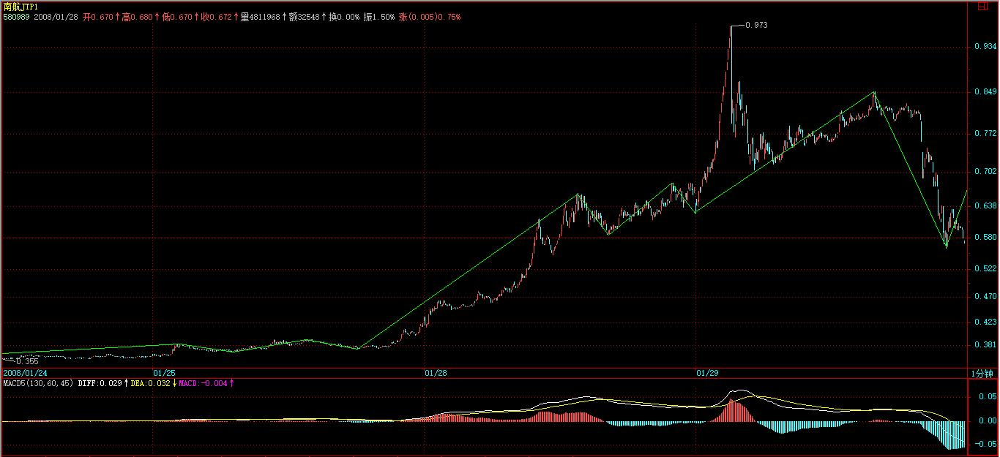
之所以说这个，是希望以一种强烈的方式表现本ID理论的一些方面，你不需要参与其中的操作，但请你必须学习。另外，早上砸到0.72逐级上台阶回拉0.85，这是一个很典型的骗人图形，这些图形后一般就是制造第二类卖点，然后后面的就是走势必须完美，再杀一波下来，多看这些图形，对你理解中枢的形成与结构十分有用。【韶山映山红】这一句“走势必须完美”怎么解？★】
你千万别操作，但你必须学习，这就是580989这经典案例的作用。
说大盘，大盘今天碰年线，这是第一次，去年底已经说，今年至少两次，第一次应该是喜剧。不过，年线这里也可以先制造空头陷阱，一切需要各方面的合力配合。【韶山映山红】空头陷阱，跌破年线，然后再反弹。】
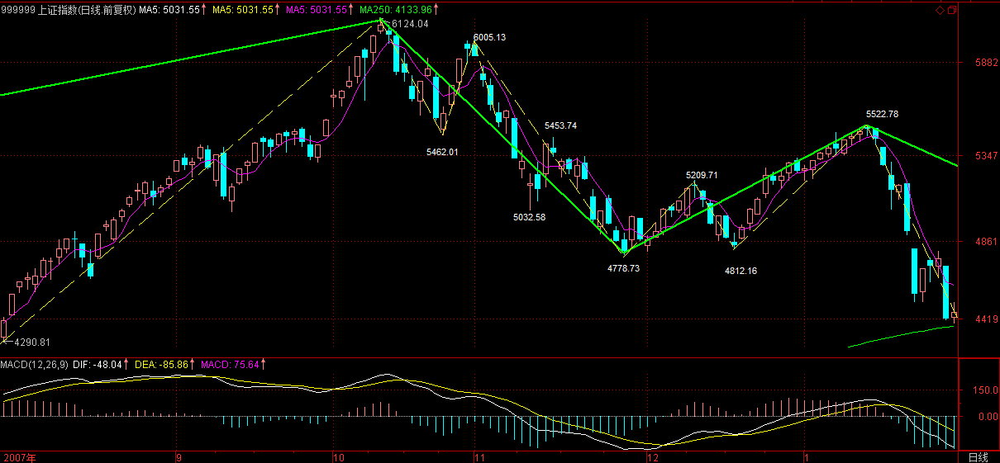
走势不是必然的，例如今天美国不减息，全世界暴跌，那就会选择空头陷阱的形式。否则，就可以直接上去。【韶山映山红】空头陷阱？直接上去？什么逻辑关系？以后研究。★★】那么，美国减息与否这个因素，谁都不知道，但今天市场上已经反应出来，就是堵其减了，这就是一种合力的表现，一旦赌错了，市场就会报复性去相反反应。
当然，对这些走势，是可以去参与的。为什么？因为就算是空头陷阱的方式，也不会远离目前的位置太多，只要控制好仓位，当然可以参与。
此外，一定要注意，你不是多头也不是空头，但你一定要知道一旦发生什么情况，多头会干什么，空头会干什么。例如，多头的愿望肯定是想补上面的缺口，这就构成市场的一个潜在力量，这个力量，在其他力量的干扰下，可能一时发挥不出来，但这反而构成我们一个更好的买入点。
请好好品味这句话：你不当多头也不当空头，但一定要知道空头多头想干什么，而走势是最终的结果，他们想干的是否干出来了，这才是关键。干不出来，有什么后果，他们会有什么后续的步骤，这才是该想的东西。
现在的走势很简单，只要不有效破年线，就继续是原来的中枢震荡。【韶山映山红】“继续是原来的中枢震荡”，是说线段级别离开5分钟中枢之后，还属于5分钟中枢的震荡走势。是不是“原来的中枢震荡”，为什么不是形态学的分析，而是挂钩“效破年线”？以后研究★】
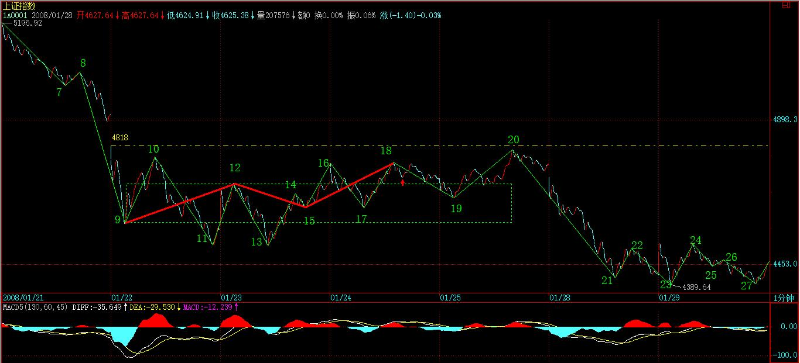
中枢震荡怎么样，看看今天的580989。这就是教科书，看明白了，有什么震荡处理不了？
先下，再见。
本课目录
教你炒股票96：无处不在的赌徒心理4778点，多空抉择线。你会起床吗？下周补缺，多头别无选择步老杜《登高》韵记梦教你打坐22：佛魔最难除【网文】如何把握热点？答：活在当下！580989完美地达到理论要求的第一目标。中国，需要的是中国式的全球化吃完饭上来说两句年线支持初显现